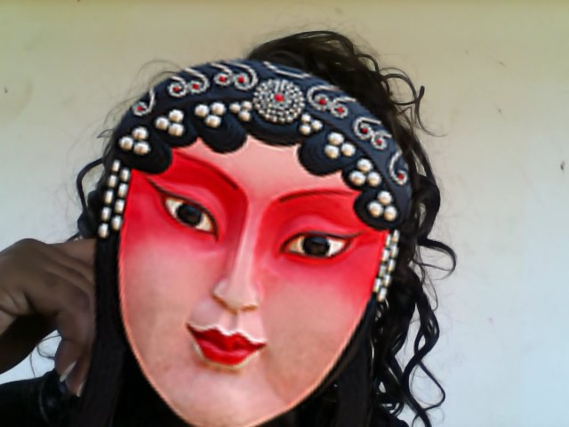

Hello, I'm Obinne Ethel Dinaka from Delta State and I am so excited to be a part of the Dufuna-Fem Code Camp. Let me tell you a little about me.
I am tall;
I am fair;
You can say I'm medium sized, hahaha!
I have dark hair
A picture of me is given below

Hahahahaha...
I dont really have a recent picture on my system.
My favorite color is are white , purple, black and pink.
I enjoy cooking and organizing
I like drawing and designing
Though we can't necessarily get perfection but I tend aim for perfection
I love food, obviously
I am VEGETARIAN. Yes, members of my nuclear family are vegetarians.
I am the 2nd child and 1st daughter of four children
I have two2 younger ones, obviously and I am the smallest in the house.
So that's me basically.
Thanks to Dufuna-Fem Code Camp
team for this opportunity.
Join at Dufuna-Fem on Slack for members only.